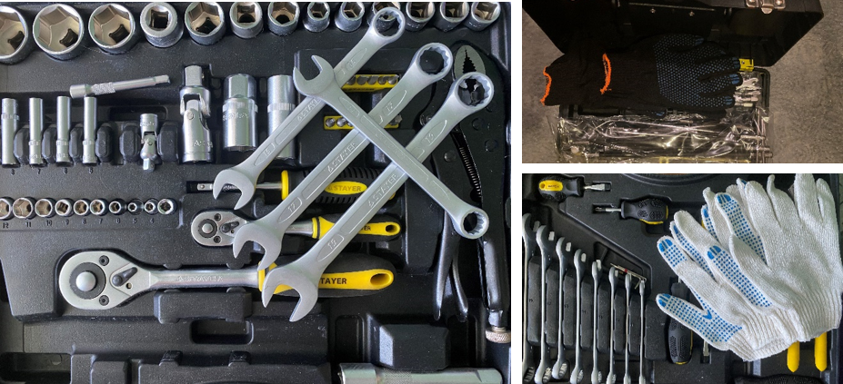
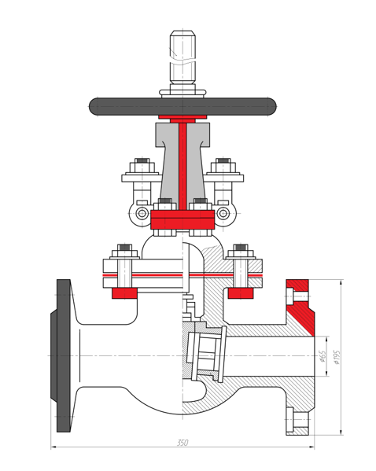

3/10
Арматура трубопроводов и технологического оборудования является важным элементом нефтеперерабатывающих производств, в следствии чего на предприятиях должны быть приняты все необходимые меры безопасности при эксплуатации, техническом обслуживании и ремонте трубопроводной арматуры.

При проведении работ необходимо пользоваться инструментом и приспособлениями, указанными в инструкции по эксплуатации для соответствующего типа запорной арматуры

Наиболее распространённые работы
по техническому обслуживанию задвижек: